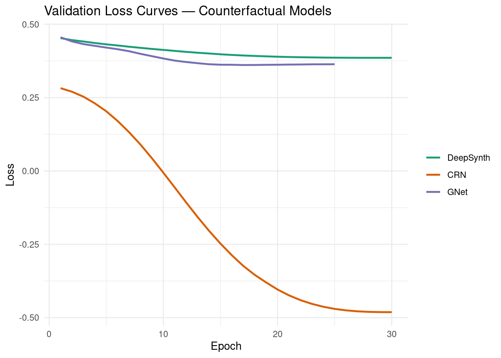
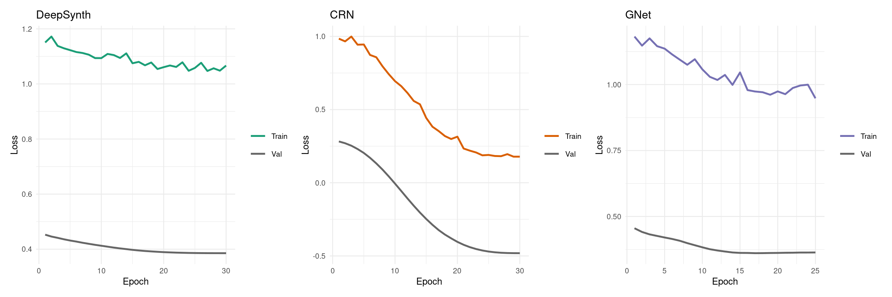
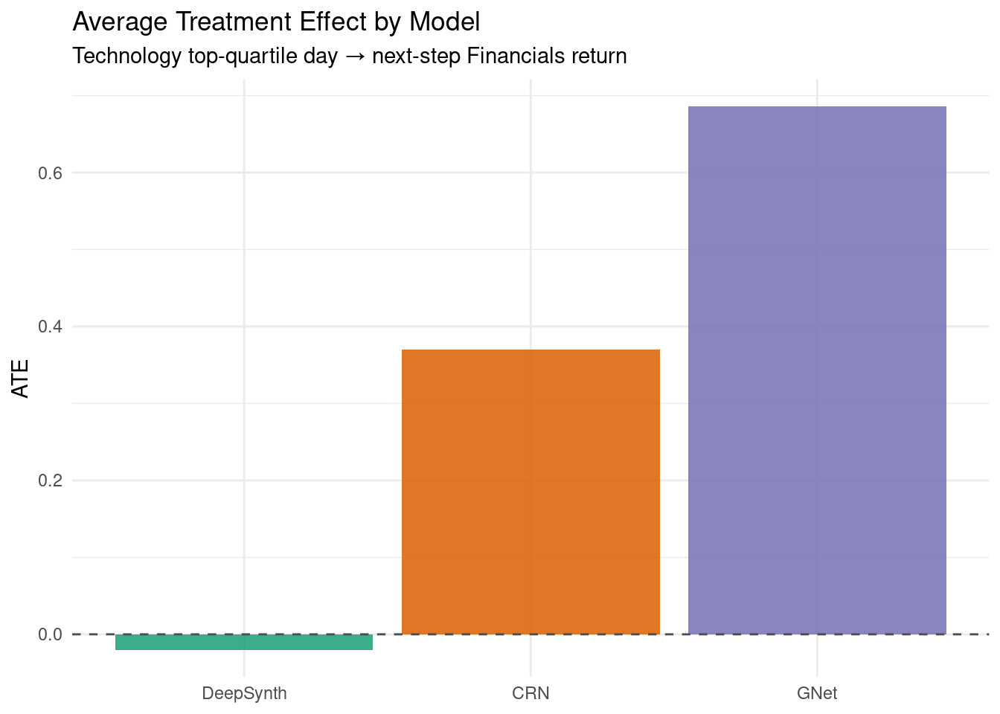
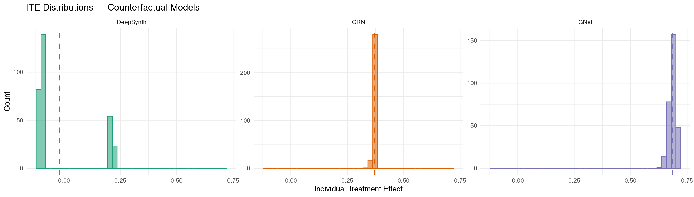
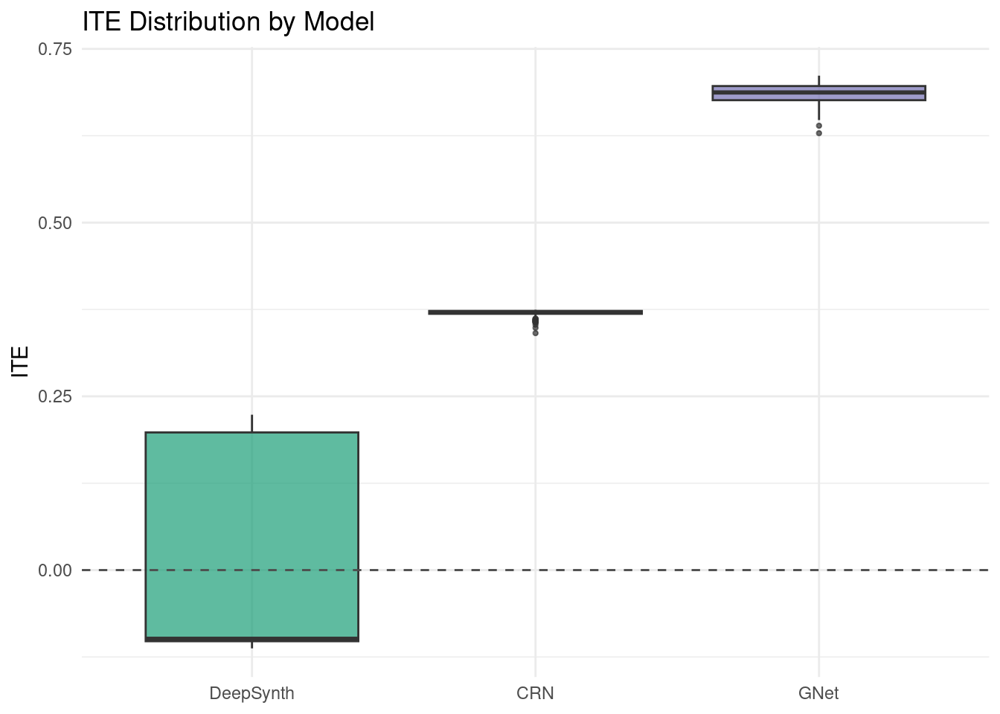
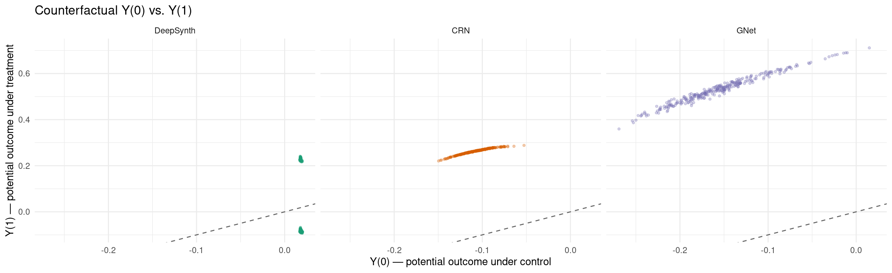
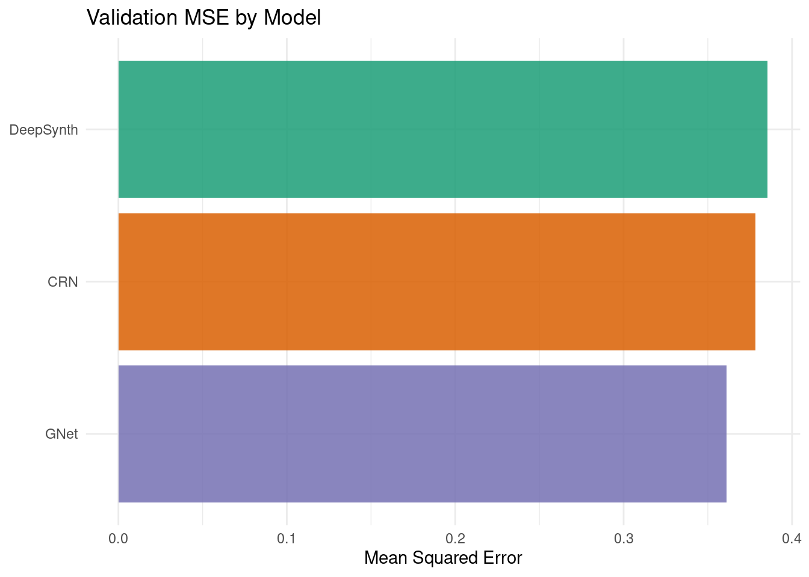
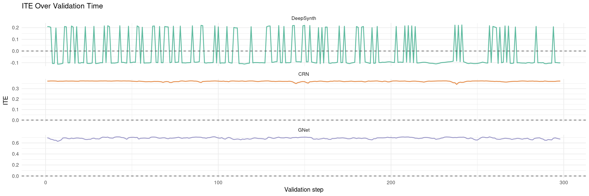
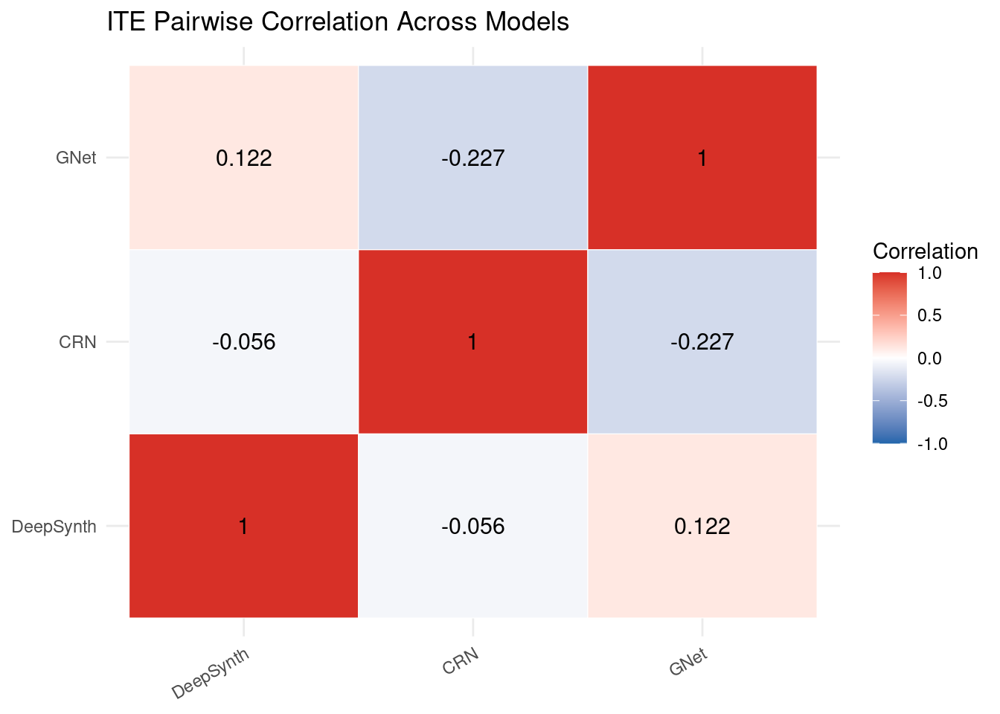

Code
packages <- c(
'tidyverse',
'plyr',
'RCausalML',
'torch',
'tidyquant',
'reshape2',
'scales',
'patchwork'
)

Potential Outcomes (Rubin Causal Model) frames causal inference around the question: what would have happened under a different treatment? This notebook implements three practical deep learning architectures for counterfactual time-series prediction:
The workflow covers theoretical foundations, data construction from sector ETF returns, model training via RCausalML, counterfactual inference, and causal effect estimation.
For binary treatment \(T \in \{0,1\}\), define potential outcomes for unit \(i\):
\[Y_i(1) = \text{outcome unit } i \text{ would have under treatment}\] \[Y_i(0) = \text{outcome unit } i \text{ would have under control}\]
The Individual Treatment Effect (ITE) is:
\[\tau_i = Y_i(1) - Y_i(0)\]
The fundamental problem of causal inference: for each unit/time, we observe only one potential outcome (the factual one). The other is counterfactual and must be estimated.
In time series with treatment history \(\bar{T}_t = (T_1,\ldots,T_t)\):
\[Y_t(\bar{a}) = \text{outcome at time } t \text{ under treatment history } \bar{a}\]
| Estimand | Formula | Question |
|---|---|---|
| ATE | \(\mathbb{E}[Y(1)-Y(0)]\) | Average causal effect in population |
| ATT | \(\mathbb{E}[Y(1)-Y(0)\mid T=1]\) | Effect on treated units |
| CATE | \(\mathbb{E}[Y(1)-Y(0)\mid X=x]\) | Effect conditional on covariates |
| Time-varying ATE | \(\mathbb{E}[Y_t(\bar{a}) - Y_t(\bar{a}')]\) | Effect of treatment strategy over time |
Time-varying confounders create feedback loops:
\[X_t \rightarrow T_t \rightarrow Y_{t+1} \rightarrow X_{t+1} \rightarrow T_{t+1} \rightarrow \cdots\]
Here \(X_t\) can be both:
This breaks naive regression assumptions and motivates causal sequence models.
Classical synthetic control estimates a treated unit’s counterfactual using weighted controls:
\[\hat{Y}_t^{(0)} = \sum_{j \in \text{controls}} w_j Y_{t,j}, \quad w_j \ge 0,\; \sum_j w_j = 1\]
DeepSynth replaces fixed linear weights with neural representation learning and scaled dot-product attention over donor series:
\[w_j = \text{softmax}\!\left(\frac{q \cdot k_j}{\sqrt{d}}\right), \quad \hat{Y}^{(0)} = \sum_j w_j v_j\]
CRN uses recurrent representations and adversarial balancing to reduce treatment-assignment bias:
\[\min_{\text{enc, pred}} \max_D \; \mathcal{L}_{\text{pred}} - \lambda\mathcal{L}_{\text{disc}}\]
The discriminator \(D\) tries to predict treatment from the encoded representation \(r\); the encoder is penalised for making \(r\) informative about \(T\), producing a balanced representation.
G-Net learns sequential generative models for covariates and outcomes, then rolls forward under interventions:
\[\mathbb{E}[Y_t(\bar{a})] = \int \prod_{k=1}^{t} p(X_k\mid\bar{X}_{k-1},\bar{A}_{k-1}=\bar{a}_{k-1})\,p(Y_t\mid\bar{X}_t,\bar{A}_t=\bar{a}_t)\,d\bar{X}\]
We use RCausalML’s counterfactual_model() function (and convenience wrappers deep_synth_model(), crn_model(), gnet_model()) to fit all three architectures on S&P 500 sector ETF daily log-return data (2018–2024).
packages <- c(
'tidyverse',
'plyr',
'RCausalML',
'torch',
'tidyquant',
'reshape2',
'scales',
'patchwork'
)# Install missing packages
#new_packages <- packages[!(packages %in% installed.packages()[,"Package"])]
#if(length(new_packages)) install.packages(new_packages)# Find package root (DESCRIPTION file) and load dev version of RCausalML
.pkg_root <- local({
paths <- c(".", "../..", "../../..", "../../../..")
found <- Filter(function(p) file.exists(file.path(p, "DESCRIPTION")), paths)
if (length(found)) normalizePath(found[1]) else NULL
})
if (!is.null(.pkg_root) && requireNamespace("devtools", quietly = TRUE)) {
try(devtools::load_all(.pkg_root, quiet = TRUE), silent = TRUE)
}
invisible(lapply(packages, function(pkg) {
suppressPackageStartupMessages(library(pkg, character.only = TRUE))
}))set.seed(42)
run_fast <- Sys.getenv("CAUSALML_FAST_RENDER", "TRUE") == "TRUE"
select_torch_device <- function(min_free_mb = 512L) {
if (!requireNamespace("torch", quietly = TRUE)) return("cpu")
if (!torch::cuda_is_available()) return("cpu")
smi_out <- tryCatch(
suppressWarnings(system2(
"nvidia-smi",
args = c("--query-gpu=memory.free", "--format=csv,noheader,nounits"),
stdout = TRUE,
stderr = FALSE
)),
error = function(e) character(0)
)
if (length(smi_out) >= 1L) {
free_mb <- suppressWarnings(as.numeric(trimws(smi_out[1L])))
if (!is.na(free_mb) && free_mb < min_free_mb) {
message(sprintf(
"CUDA has ~%d MiB free (< %d MiB required); using CPU.",
round(free_mb), min_free_mb
))
return("cpu")
}
}
ok <- tryCatch({
x <- torch::torch_randn(c(32L, 20L, 128L), device = "cuda")
torch::nnf_gelu(x)
rm(x)
torch::cuda_empty_cache()
TRUE
}, error = function(e) FALSE)
if (!ok) {
message("CUDA probe failed (likely out of memory); using CPU.")
return("cpu")
}
"cuda"
}
device_use <- if (run_fast) "cpu" else select_torch_device(min_free_mb = 512L)
if (requireNamespace("torch", quietly = TRUE)) torch::torch_manual_seed(42)
cat(sprintf("Using device: %s (run_fast=%s)\n", device_use, run_fast))Using device: cpu (run_fast=TRUE)This section downloads S&P 500 sector ETF prices, computes standardized log-returns, defines a binary treatment (Technology sector top-quartile return days) and a scalar outcome (Financials next-step return). A synthetic fallback is provided if market data is unavailable.
Note: If online market data is unavailable, the notebook automatically falls back to synthetic demo data so all downstream cells remain runnable.
TICKERS <- c(
"XLF" = "Financials",
"XLE" = "Energy",
"XLK" = "Technology",
"XLV" = "Healthcare",
"XLI" = "Industrials",
"XLY" = "ConsumerDisc",
"XLP" = "ConsumerStap",
"XLU" = "Utilities"
)
fetch_close_prices <- function(tickers, start = "2018-01-01", end = "2024-01-01") {
tryCatch({
raw <- tidyquant::tq_get(names(tickers), get = "stock.prices",
from = start, to = end, complete_cases = TRUE)
if (is.null(raw) || nrow(raw) == 0) return(NULL)
raw |>
dplyr::select(symbol, date, adjusted) |>
tidyr::pivot_wider(names_from = symbol, values_from = adjusted) |>
dplyr::arrange(date) |>
tidyr::drop_na()
}, error = function(e) NULL)
}
close_wide <- fetch_close_prices(TICKERS)
if (is.null(close_wide) || nrow(close_wide) < 30) {
message("Warning: market data unavailable; using synthetic demo data.")
set.seed(42)
n_steps <- 1200L
d_syn <- length(TICKERS)
# Correlated synthetic returns with a latent market factor
market <- matrix(rnorm(n_steps), n_steps, 1) * 0.8
loading <- seq(0.5, 1.1, length.out = d_syn)
idio <- matrix(rnorm(n_steps * d_syn) * 0.6, n_steps, d_syn)
data_np <- sweep(market %*% t(loading), 2, rep(0, d_syn)) + idio
colnames(data_np) <- unname(TICKERS)
} else {
price_mat <- as.matrix(close_wide[, names(TICKERS)])
log_ret <- log(price_mat[-1L, ] / price_mat[-nrow(price_mat), ])
colnames(log_ret) <- unname(TICKERS[colnames(price_mat)])
data_np <- scale(log_ret)
}
VAR_NAMES <- colnames(data_np)
d <- ncol(data_np)
Tt <- nrow(data_np)
cat(sprintf("d=%d variables, T=%d\n", d, Tt))d=8 variables, T=1508Variables: Financials, Energy, Technology, Healthcare, Industrials, ConsumerDisc, ConsumerStap, Utilities # Treatment: Technology shock — top-quartile standardized return
tech_idx <- which(VAR_NAMES == "Technology")
tech_ret <- data_np[, tech_idx]
threshold <- quantile(tech_ret, 0.75)
treatment <- as.numeric(tech_ret > threshold)
# Outcome: Financials (next-step)
fin_idx <- which(VAR_NAMES == "Financials")
outcome <- as.numeric(data_np[, fin_idx])
cat(sprintf("Treatment rate: %.2f%%\n", 100 * mean(treatment)))Treatment rate: 25.00%T=1508, d=8, treatment -> outcome: Technology -> Financialstreat_col=3 (Technology), out_col=1 (Financials)All three architectures are implemented as R torch nn_module objects inside RCausalML and are accessible through the single entry-point counterfactual_model().
Input (x_t, T_hist)
│
▼
2-layer GRU backbone [d + 1 → hidden]
│
├─── Covariate head [hidden + 1 → d] → X̂_{t+1}
│
└─── Outcome head [hidden + d + 1 → 1] → Ŷ_{t+1}(ā)Counterfactuals \(\hat{Y}(0)\) and \(\hat{Y}(1)\) are computed by substituting \(\text{do}(T=0)\) and \(\text{do}(T=1)\) in both heads.
counterfactual_model() is the single entry point for all three architectures. Internally it:
(lag, d) covariate history, treatment history, and outcome arrays.LAG <- 20L
cat("Fitting DeepSynth, CRN, and G-Net models ...\n")Fitting DeepSynth, CRN, and G-Net models ...cf_fit <- counterfactual_model(
data = data_np,
treatment = treatment,
outcome = outcome,
treat_col = tech_idx,
out_col = fin_idx,
lag = LAG,
models = c("deepsynth", "crn", "gnet"),
latent_dim = if (run_fast) 16L else 32L,
rep_dim = if (run_fast) 16L else 32L,
hidden = if (run_fast) 32L else 64L,
lam_adv = 0.2,
dropout = 0.15,
epochs = if (run_fast) 30L else 80L,
lr = 3e-4,
patience = if (run_fast) 8L else 15L,
batch_size = if (identical(device_use, "cuda")) 32L else 64L,
val_split = 0.2,
device = device_use,
verbose = !run_fast
)
cat("\nTraining complete.\n")
Training complete.cat("Validation MSE:\n")Validation MSE:deepsynth crn gnet
0.385569 0.378220 0.361034 val_mse_df <- data.frame(
Model = c("DeepSynth", "CRN", "GNet"),
Val_MSE = unname(cf_fit$val_mse)
) |> dplyr::arrange(Val_MSE)
print(val_mse_df) Model Val_MSE
1 GNet 0.3610344
2 CRN 0.3782196
3 DeepSynth 0.3855695hist_list <- cf_fit$histories
make_loss_df <- function(nm) {
h <- hist_list[[nm]]
if (is.null(h)) return(NULL)
n_ep <- sum(h$val != 0)
data.frame(
epoch = seq_len(n_ep),
val = h$val[seq_len(n_ep)],
train = h$train[seq_len(n_ep)],
model = nm
)
}
loss_df <- dplyr::bind_rows(lapply(names(hist_list), make_loss_df))
loss_df$model <- factor(loss_df$model,
levels = c("deepsynth", "crn", "gnet"),
labels = c("DeepSynth", "CRN", "GNet"))
ggplot(loss_df, aes(x = epoch, y = val, colour = model)) +
geom_line(linewidth = 0.9) +
scale_colour_manual(values = c(
"DeepSynth" = "#1b9e77",
"CRN" = "#d95f02",
"GNet" = "#7570b3"
)) +
labs(
title = "Validation Loss Curves — Counterfactual Models",
x = "Epoch",
y = "Loss",
colour = NULL
) +
theme_minimal()
plot_model_loss <- function(nm, label, colour) {
h <- hist_list[[nm]]
if (is.null(h)) return(NULL)
n_ep <- sum(h$val != 0)
df <- data.frame(
epoch = seq_len(n_ep),
Train = h$train[seq_len(n_ep)],
Val = h$val[seq_len(n_ep)]
) |> tidyr::pivot_longer(-epoch, names_to = "split", values_to = "loss")
ggplot(df, aes(x = epoch, y = loss, colour = split)) +
geom_line(linewidth = 0.85) +
scale_colour_manual(values = c("Train" = colour, "Val" = "grey40")) +
labs(title = label, x = "Epoch", y = "Loss", colour = NULL) +
theme_minimal(base_size = 9)
}
p1 <- plot_model_loss("deepsynth", "DeepSynth", "#1b9e77")
p2 <- plot_model_loss("crn", "CRN", "#d95f02")
p3 <- plot_model_loss("gnet", "GNet", "#7570b3")
patchwork::wrap_plots(p1, p2, p3, ncol = 3)
ate_counterfactual() returns the Average Treatment Effect from each model’s validation split. ite_counterfactual() returns the per-observation Individual Treatment Effect vector.
# Average Treatment Effect
ate_vals <- ate_counterfactual(cf_fit)
cat("Estimated ATE (Technology shock → Financials return):\n")Estimated ATE (Technology shock → Financials return):deepsynth crn gnet
-0.02015 0.37000 0.68567
ITE summary (DeepSynth): mean=-0.0201, sd=0.1366ITE summary (CRN): mean=0.3700, sd=0.0043ITE summary (GNet): mean=0.6857, sd=0.0147ate_df <- data.frame(
model = names(ate_vals),
ATE = as.numeric(ate_vals)
)
ate_df$model <- factor(ate_df$model,
levels = c("deepsynth", "crn", "gnet"),
labels = c("DeepSynth", "CRN", "GNet"))
ggplot(ate_df, aes(x = model, y = ATE, fill = model)) +
geom_col(show.legend = FALSE, alpha = 0.85) +
geom_hline(yintercept = 0, linetype = "dashed", colour = "grey30") +
scale_fill_manual(values = c(
"DeepSynth" = "#1b9e77",
"CRN" = "#d95f02",
"GNet" = "#7570b3"
)) +
labs(
title = "Average Treatment Effect by Model",
subtitle = "Technology top-quartile day → next-step Financials return",
x = NULL,
y = "ATE"
) +
theme_minimal()
ite_long <- data.frame(
ite = c(ite_ds, ite_crn, ite_gn),
model = rep(c("DeepSynth", "CRN", "GNet"),
times = c(length(ite_ds), length(ite_crn), length(ite_gn)))
)
ite_long$model <- factor(ite_long$model, levels = c("DeepSynth", "CRN", "GNet"))
# Per-model mean lines
means_df <- ite_long |>
dplyr::group_by(model) |>
dplyr::summarise(mean_ite = mean(ite), .groups = "drop")
ggplot(ite_long, aes(x = ite, fill = model, colour = model)) +
geom_histogram(bins = 40, alpha = 0.55, position = "identity") +
geom_vline(data = means_df,
aes(xintercept = mean_ite, colour = model),
linetype = "dashed", linewidth = 0.9) +
facet_wrap(~model, scales = "free_y") +
scale_fill_manual(values = c(
"DeepSynth" = "#1b9e77",
"CRN" = "#d95f02",
"GNet" = "#7570b3"
)) +
scale_colour_manual(values = c(
"DeepSynth" = "#1b9e77",
"CRN" = "#d95f02",
"GNet" = "#7570b3"
)) +
labs(
title = "ITE Distributions — Counterfactual Models",
x = "Individual Treatment Effect",
y = "Count"
) +
theme_minimal() +
theme(legend.position = "none")
ggplot(ite_long, aes(x = model, y = ite, fill = model)) +
geom_boxplot(alpha = 0.7, outlier.size = 0.8) +
geom_hline(yintercept = 0, linetype = "dashed", colour = "grey30") +
scale_fill_manual(values = c(
"DeepSynth" = "#1b9e77",
"CRN" = "#d95f02",
"GNet" = "#7570b3"
)) +
labs(
title = "ITE Distribution by Model",
x = NULL,
y = "ITE"
) +
theme_minimal() +
theme(legend.position = "none")
ITE estimates on the validation split are already stored in cf_fit$ite_val. We reconstruct Y(0) and Y(1) from the ITE vector and the factual prediction stored in each model.
# Helper: safely convert a torch tensor (or NULL) to numeric vector
.t2r <- function(x) if (is.null(x)) NULL else as.numeric(x$cpu())
# Helper: collect pred, Y(0), Y(1), ITE from each fitted module
# DeepSynth uses `ycounter` for Y(0) and `pred` as factual proxy for Y(1);
# CRN and GNet expose `y0` and `y1` directly.
collect_cf <- function(fit_obj, model_name, batch_size = 256L) {
mod <- fit_obj$models[[model_name]]
if (is.null(mod)) stop("Model not fitted: ", model_name)
vd <- fit_obj$val_data
dev <- fit_obj$device
mod$eval()
N <- dim(vd$X)[1L]
idx_list <- split(seq_len(N), ceiling(seq_len(N) / batch_size))
preds <- y0s <- y1s <- ites <- numeric(0)
for (idx in idx_list) {
Xb <- torch::torch_tensor(
vd$X[idx, , , drop = FALSE],
dtype = torch::torch_float32(), device = dev)
Thb <- torch::torch_tensor(
vd$T_hist[idx, , drop = FALSE],
dtype = torch::torch_float32(), device = dev)
Tnb <- torch::torch_tensor(
vd$T_next[idx],
dtype = torch::torch_float32(), device = dev)
out <- mod$forward(Xb, Thb, Tnb)
# Resolve Y(0) and Y(1): DeepSynth uses 'ycounter'; CRN/GNet use 'y0','y1'
y0_t <- if (!is.null(out[["y0"]])) out[["y0"]]
else if (!is.null(out[["ycounter"]])) out[["ycounter"]]
else out[["pred"]]
y1_t <- if (!is.null(out[["y1"]])) out[["y1"]]
else out[["pred"]]
preds <- c(preds, .t2r(out[["pred"]]))
y0s <- c(y0s, .t2r(y0_t))
y1s <- c(y1s, .t2r(y1_t))
ites <- c(ites, .t2r(out[["ite"]]))
}
list(pred = preds, y0 = y0s, y1 = y1s, ite = ites)
}
pred_ds <- collect_cf(cf_fit, "deepsynth")
pred_crn <- collect_cf(cf_fit, "crn")
pred_gn <- collect_cf(cf_fit, "gnet")
vd <- cf_fit$val_data
n_val <- length(vd$Y_next)
cat(sprintf("Validation observations: %d\n", n_val))Validation observations: 298cf_summary <- data.frame(
model = c("DeepSynth", "CRN", "GNet"),
mean_y0 = c(mean(pred_ds$y0), mean(pred_crn$y0), mean(pred_gn$y0)),
mean_y1 = c(mean(pred_ds$y1), mean(pred_crn$y1), mean(pred_gn$y1)),
mean_ite = c(mean(pred_ds$ite), mean(pred_crn$ite), mean(pred_gn$ite))
)
cat("\nCounterfactual predictions summary:\n")
Counterfactual predictions summary:print(data.frame(cf_summary[, 1], round(cf_summary[, -1], 5))) cf_summary...1. mean_y0 mean_y1 mean_ite
1 DeepSynth 0.01823 -0.00192 -0.02015
2 CRN -0.10760 0.26240 0.37000
3 GNet -0.15551 0.53016 0.68567build_y01_df <- function(p, name) {
data.frame(y0 = p$y0, y1 = p$y1, model = name)
}
y01_df <- dplyr::bind_rows(
build_y01_df(pred_ds, "DeepSynth"),
build_y01_df(pred_crn, "CRN"),
build_y01_df(pred_gn, "GNet")
)
y01_df$model <- factor(y01_df$model, levels = c("DeepSynth", "CRN", "GNet"))
ggplot(y01_df, aes(x = y0, y = y1, colour = model)) +
geom_point(alpha = 0.3, size = 0.9) +
geom_abline(slope = 1, intercept = 0, linetype = "dashed", colour = "grey40") +
facet_wrap(~model) +
scale_colour_manual(values = c(
"DeepSynth" = "#1b9e77",
"CRN" = "#d95f02",
"GNet" = "#7570b3"
)) +
labs(
title = "Counterfactual Y(0) vs. Y(1)",
x = "Y(0) — potential outcome under control",
y = "Y(1) — potential outcome under treatment"
) +
theme_minimal() +
theme(legend.position = "none")
Validation MSE (next-step Financials reconstruction):print(val_df) model val_mse
1 DeepSynth 0.3855695
2 CRN 0.3782196
3 GNet 0.3610344ggplot(val_df, aes(x = reorder(model, val_mse), y = val_mse, fill = model)) +
geom_col(show.legend = FALSE, alpha = 0.85) +
scale_fill_manual(values = c(
"DeepSynth" = "#1b9e77",
"CRN" = "#d95f02",
"GNet" = "#7570b3"
)) +
coord_flip() +
labs(
title = "Validation MSE by Model",
x = NULL,
y = "Mean Squared Error"
) +
theme_minimal()
n_val <- length(ite_ds)
ite_time_df <- data.frame(
t = seq_len(n_val),
DeepSynth = ite_ds,
CRN = ite_crn,
GNet = ite_gn
) |> tidyr::pivot_longer(-t, names_to = "model", values_to = "ite")
ite_time_df$model <- factor(ite_time_df$model,
levels = c("DeepSynth", "CRN", "GNet"))
ggplot(ite_time_df, aes(x = t, y = ite, colour = model)) +
geom_line(alpha = 0.7, linewidth = 0.6) +
geom_hline(yintercept = 0, linetype = "dashed", colour = "grey30") +
scale_colour_manual(values = c(
"DeepSynth" = "#1b9e77",
"CRN" = "#d95f02",
"GNet" = "#7570b3"
)) +
facet_wrap(~model, ncol = 1, scales = "free_y") +
labs(
title = "ITE Over Validation Time",
x = "Validation step",
y = "ITE"
) +
theme_minimal(base_size = 9) +
theme(legend.position = "none")
ite_mat <- data.frame(
DeepSynth = ite_ds,
CRN = ite_crn,
GNet = ite_gn
)
corr_mat <- cor(ite_mat)
cat("Pairwise Pearson correlation of ITE vectors:\n")Pairwise Pearson correlation of ITE vectors: DeepSynth CRN GNet
DeepSynth 1.0000 -0.0563 0.1216
CRN -0.0563 1.0000 -0.2271
GNet 0.1216 -0.2271 1.0000
Fraction sign-agreement (all three models): 25.8%corr_df <- reshape2::melt(corr_mat)
colnames(corr_df) <- c("Model1", "Model2", "Correlation")
ggplot(corr_df, aes(x = Model1, y = Model2, fill = Correlation)) +
geom_tile(colour = "white") +
geom_text(aes(label = round(Correlation, 3)), size = 4, colour = "black") +
scale_fill_gradient2(low = "#2166ac", mid = "white", high = "#d73027",
midpoint = 0, limits = c(-1, 1)) +
labs(
title = "ITE Pairwise Correlation Across Models",
x = NULL, y = NULL
) +
theme_minimal() +
theme(axis.text.x = element_text(angle = 30, hjust = 1))
In real applications, strengthen identification with domain assumptions (no unmeasured confounding, positivity, consistency), richer diagnostics, and robustness checks.
In this notebook, we explored the estimation of individual and average treatment effects (ITE and ATE) in the context of counterfactual reasoning and causal inference, using three deep learning architectures — DeepSynth, CRN, and G-Net — via RCausalML’s unified counterfactual_model() interface on S&P 500 sector ETF data.
Key Findings:
Conclusions and Recommendations:
counterfactual_model(), ate_counterfactual(), ite_counterfactual(), predict.counterfactual_model() — main API for this notebook.